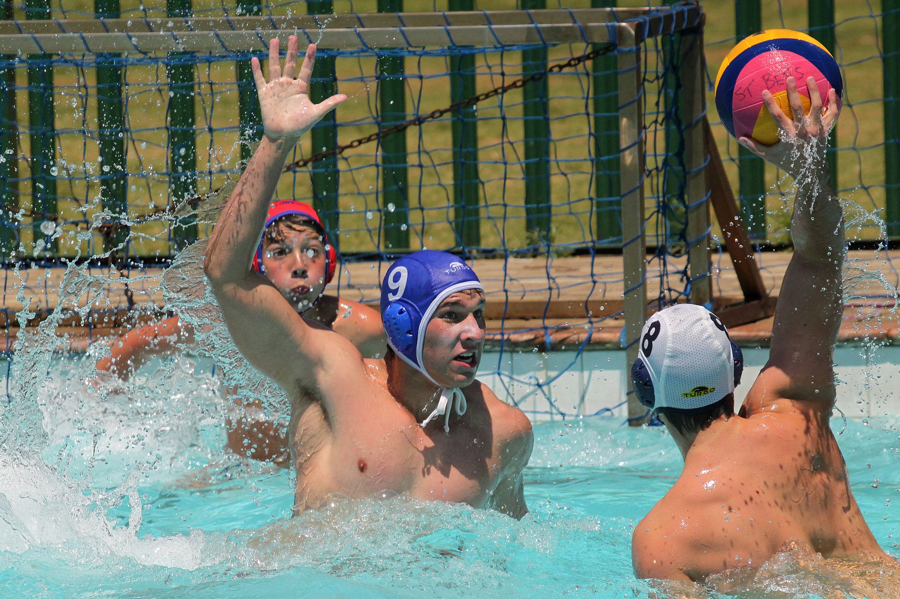

A Recruiting Class Worth Celebrating — and Learning From
When Fordham University recently announced its incoming water polo recruiting class, it celebrated a group of young athletes who had dedicated years of effort, training, and commitment to their sport. For families in Wesley Chapel, Land O' Lakes, and across the Tampa Bay area, news like this can spark an important question: what does it actually take for a young water polo player to reach that level?
The answer is both inspiring and practical. College programs do not discover athletes overnight. They recruit players who have built consistent skills, demonstrated strong character, and shown the kind of dedication that only comes from years of intentional training. Understanding this process early gives young athletes and their families a meaningful advantage.
When Does the Recruiting Journey Begin?
Many parents are surprised to learn that the college recruiting conversation in competitive aquatic sports often begins as early as ninth or tenth grade. College coaches attend club tournaments, review highlight footage, and track standout players well before a student ever submits an application.
This does not mean young athletes need to feel pressure at a young age. It does mean that the habits, skills, and work ethic developed during the youth years carry real weight down the road. Swimmers and water polo players who train consistently, compete regularly, and focus on skill development are the ones who show up on a coach's radar when the time is right.
What College Coaches Are Looking For
While each program has its own needs, college water polo coaches generally evaluate recruits across several key areas:
- Technical skills: Ball handling, shooting accuracy, defensive positioning, and swimming speed all matter at the college level.
- Athletic foundation: Strong swimming technique is non-negotiable. Water polo players who are also well-trained swimmers have a clear competitive edge.
- Coachability: Coaches want players who respond well to feedback, adapt quickly, and contribute positively to a team culture.
- Academic standing: Division I and Division III programs alike prioritize student-athletes who can meet academic eligibility requirements and thrive in the classroom.
- Competitive experience: Club team participation, tournament results, and exposure to high-level competition all help coaches evaluate a player's readiness.
Building the Foundation Right Here in Tampa Bay
The good news for families in Wesley Chapel and Land O' Lakes is that world-class aquatic training does not require traveling far from home. Local club programs provide young athletes with the structured coaching, competitive opportunities, and skill development they need to grow into serious players.
At Nexar Aquatic Academy, young athletes receive coaching that emphasizes both the technical demands of water polo and the swimming fundamentals that support long-term athletic success. Whether a player is just discovering the sport or is already competing at a high level, intentional training makes all the difference.
Advice for Parents Supporting a Young Athlete's Dreams
If your child has expressed interest in playing water polo at the college level, here are a few steps worth taking now:
- Enroll them in a reputable club program with experienced coaching staff.
- Prioritize swimming development alongside water polo skills — the two go hand in hand.
- Help them maintain strong grades from the start of high school.
- Attend tournaments and exposure events to build visibility with college programs.
- Have open conversations with coaches about your athlete's goals and timeline.
Fordham's newest recruiting class represents years of work by talented young athletes who chose to invest in their development early. Your child's story is still being written, and the pool is the perfect place to start.
Nexar Aquatic Academy is proud to support the next generation of water polo players and swimmers right here in the Tampa Bay area. Reach out today to learn more about our programs and how we can help your young athlete take their first — or next — great step.
Ready to get in the water?
First practice is completely FREE — no commitment needed.